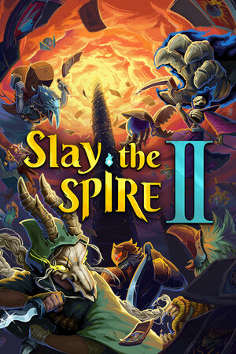
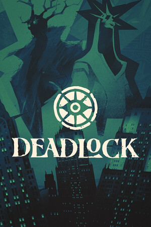
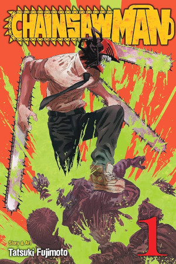
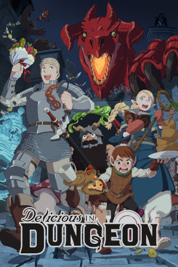
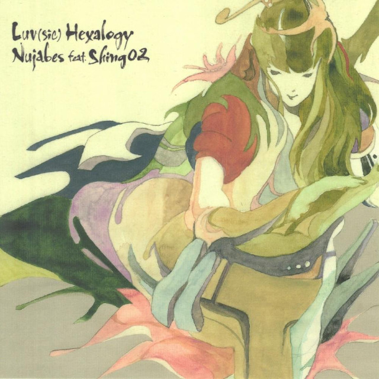
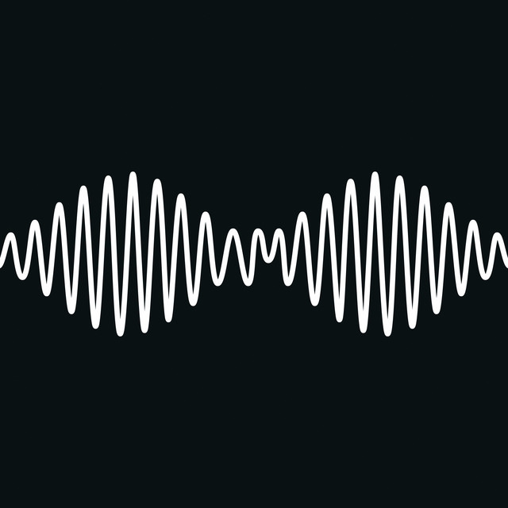
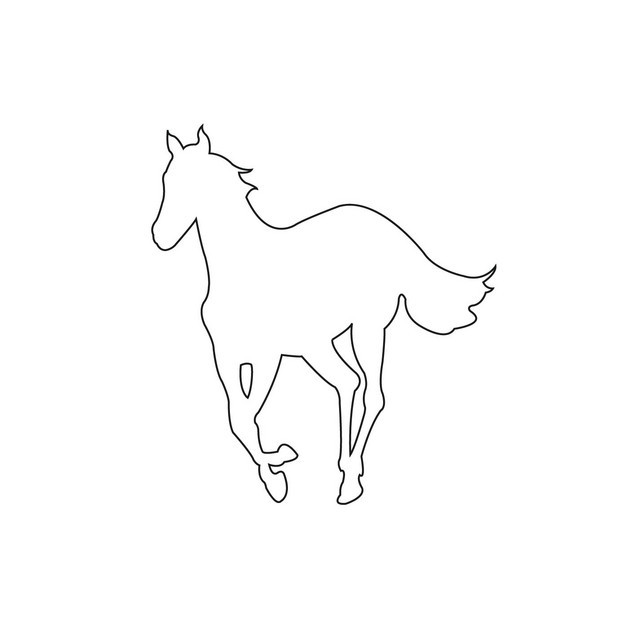

About Me
"Open paba?"
G*mer kumsay student
Hello!
My name is Marcus Kristo A. Mendoza. I am a first-year BSCS student at Bicol University. I am 19 and I live in Daraga, kilicao. I chose BSCS because I am interested in game development and I hope to learn how to develop one.
Other Socials
My Path into computing
My Path into computing started on videogames and modding. Although I could not get into complex topics, I am eager to learn the fundamentals and learn how to enjoy and learn efficiently.
My favorites and skills
My favorite (media)
| Videogame |
 Slay The Spire 2 |
 Deadlock |

Elden Ring |
|---|---|---|---|
| Anime |
 Chainsaw Man |
 Dungeon Meshi |
Attack on Titan |
| Album |
 Nujabes (Luv(sic)) |
 Arctic Monkeys (AM) |
 Deftones (White Pony) |
My skills
- Basic programming
- Digital Art
- 3D modelling
- Digital image editing
- Play guitar
From time to time, I do digital art but occasionally I get creative burn out. I 3D model on blender for research but mostly for fun. Though once I get a better pc I might get back and lock in on modelling. Though im not that good at guitar, We used to jam/banda back then in highschool. Hopefully maybe someone can jam w/ me (even if im mediocre lol)
My Goals
- Complete Computer Science
- Get a stable job
- Create a game
- Enjoy life
Reflection
Slowly enough, I am learning web design and I enjoyed doing this project. I added improvements to the design and added more features.
Source
All images, besides myself, from their respective sources.